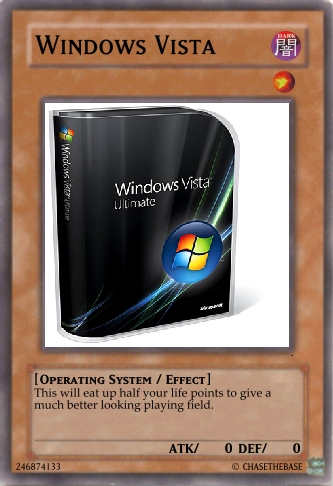

Poll: Do you like Vista? (39 votes)
#15289 1 2007-05-19T16:25:03Z The_Muffin_Man I love Vista
Awsome!!!
#322500 2 2007-05-19T16:26:47Z Spawn of Yanni From what I've heard, it's not great, to say the least.
This should be in T&I.
#322501 3 2007-05-19T16:36:11Z 00tinytim00 I've heard that Vista doesn't work with anything, but my brother tells me that, on the contrary, there's a backwards-compatibility function which lets you play old things.
I haven't got it, though, so I don't know.
#322503 4 2007-05-19T16:43:32Z epigone I like it just fine. It serves my purposes, which I may add, are not many nor great.
#322504 5 2007-05-19T16:43:55Z The_Muffin_Man I have Vista and I really Like it. But, There are a few things that don't do anything but are freakin awsome. I also like the snipping tool.
Attachment (lost): post-5-1179593035.jpg
#322507 6 2007-05-19T17:07:56Z McP3000 I've never used it, and ive only seen it used once...and it was on a Mac Laptop o.o
#322528 7 2007-05-19T19:30:08Z beginner2 crap.
'nuff said
#322548 8 2007-05-19T20:40:23Z usaswim I'm just gonna say ok.
There are many uber-cool features in it (most of which are already on Mac OS X), but with all those features comes a higher demand for CPU and memory.
#322558 9 2007-05-19T21:23:37Z Skyline I think Vista may be a little too advanced for most computers today. Becuase it needs such a high running capacity, most computers will be slowed down by it, until further advances in technology come in. They should find a way to incorporate all of the features with less CPU and memory usage, though.
#322563 10 2007-05-19T22:02:07Z Exüberance Quote: ChaseTheBase

#322587 11 2007-05-19T23:37:59Z Luminaflare its ok but i won't be getting it for a while (read: till i get a new pc and i want DX10)
#322630 12 2007-05-20T01:59:09Z Kablizzy Eh, doesn't seem like anything special.
#322636 13 2007-05-20T02:30:29Z Atilla I don't have it, but from what I've seen it's not that great. Half of its "new features" seem to be shiny baubles which will quickly become tiresome or automatic configuration and pop-ups for the computer illiterate. Most of the rest could conceivably be useful to someone, but that someone is frequently not you. Given that it has compatibility problems and it eats memory, and will only offer a small amount of increased functionality for most users, I'd say that in most cases it's not really worth upgrading from XP at the moment. It might look better in a year or so, when hardware is better and they've sorted out the compatibility issues. And, of course, if you're buying a new system you might as well get Vista.
#322682 14 2007-05-20T07:54:22Z coffeefreak 'tis good.
Short posts r bad.
#322742 15 2007-05-20T14:46:58Z faemir after using for several months (ehehe

;;) I can not see what is the fuss and the 'wow' going on for. OOO! DX10! we want to force people to get vista by not giving XP DX10.
And the stupid gimmicky new features like the alternative to alt-tab and the sidebar.
It's performance issues are stupid - 2ghz CPU and 512 (ideally 1gb ram)? Beryl on linux needs 128mb ram.
see:
http://youtube.com/watch?v=G3p8IBNNd88 - not the best display of it's features, but oh well; you get the idea.
and still vista doesn't have inbuilt skin management, I have to resolve to using windowblinds.
#323010 16 2007-05-21T04:22:23Z Tsukatu Atilla: Beyond creating more friendly auto-configuration features, Vista has also managed to hide the manual configuration options phenomenally well. Just to configure the wireless network encryption scheme on my step-father's new laptop, I had to add it as a favorite network and then sneak into a window that let me configure the connection manually by clicking on some small-print link within the properties page of the favorite'd connection.
#323028 17 2007-05-21T05:39:41Z Atilla Yeah, I'd heard that the Labyrinth of 1000 Preference Tabs had returned with a vengeance. I wish someone at Microsoft would realise that making manual configuration quick and easy largely eliminates the need for excessive amounts of automated silliness.
#323067 18 2007-05-21T13:09:55Z Chase I'm going to contradict myself here, because Vista is actually better than XP, it may have a few niggles with compatability and yes, it may need more RAM (MORE RAM!!!11!) but it's far better than XP, but not awesome.
#323106 19 2007-05-21T18:29:11Z Sniperwhere Crap. I was disappointed with it.
#323115 20 2007-05-21T19:30:51Z faemir Tsukatu: i feel your pain
I guess this is why you use linux huh?
#323116 21 2007-05-21T19:37:03Z FishStik I'd say OK. Most of the 'features' are shiny things, and my computer has no problem with what Vista needs. There's just a lot of gunk that is unneeded, compatablity isn't much of an issue.
It's better than XP, just includes a lot more annoyances.
#323127 22 2007-05-21T20:26:49Z Spiker 256 MB of RAM + AMD Athlon 2400 = NO VISTA
Not to say I'm disappointed, if I could get XP to run fine I wouldn't even be thinking about Vista. Though XP does not support Direct X10 , so that could be a problem later on.
I WANT DIRECT X 10 D:|
#323458 23 2007-05-23T02:47:52Z Electrical-Hazard For normal, everyday use?
Its meh.
For games?
Awful. Just plain awful.

Its also chock-full of DRM, and is a
[Female Dog] to upgrade to.
#323461 24 2007-05-23T03:03:41Z Gforce20 Just get Vista Transformation (google it). Gives you all the looks of Vista for free. No expiration date, no strings attached. You're still using Windows XP all the while.
#323475 25 2007-05-23T04:11:51Z Agent 001/7 Considering the fact that I'm a Mac lover... Craptacular!
#323909 26 2007-05-24T21:29:40Z usaswim Shit! I just got the blue screen of death on Vista. Tell me one good reason why I shouldn't downgrade to XP now. TELL ME! Damn, all my data got erased and so did my memory.
#324001 27 2007-05-25T01:41:56Z Sniperwhere I can't unzip any downloads on my Vista anymore. Something went wrong and changed all zip files to internet explorer which causes it to crash when accessed. Now I have to download anything I need on the family XP, unzip it to my flash drive, and move it to my computer. Safe remove for flash drives don't always work either.

#326496 28 2007-06-02T06:23:32Z mistaken72 i'd say it's useful but Vent doesn't work on it!! So it's ookkk.